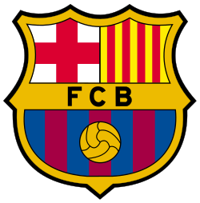
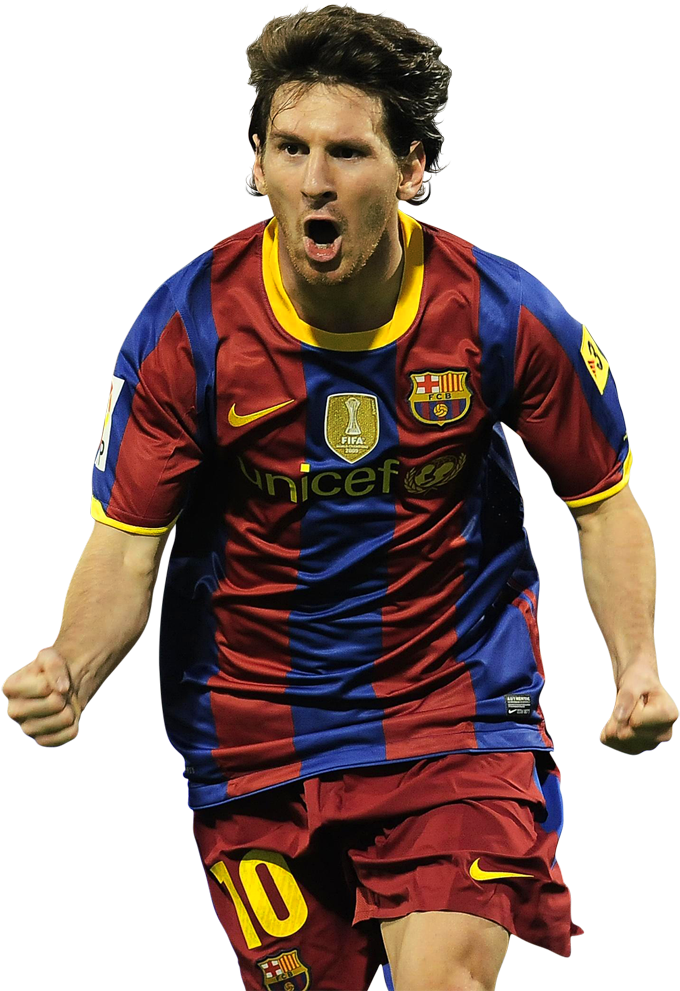
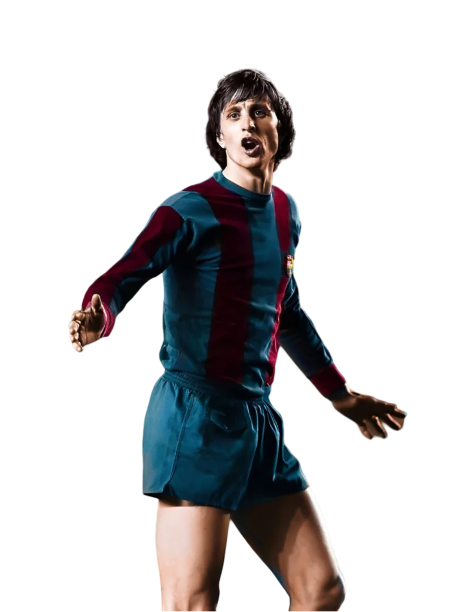
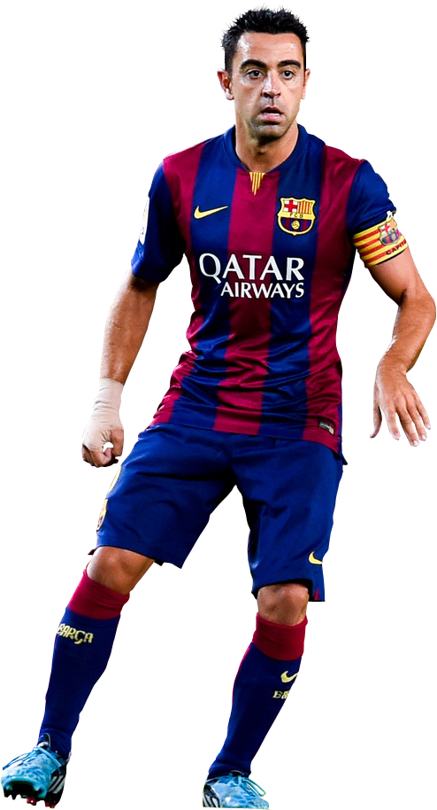

Learn about FC Barcelona: one of the greatest clubs in football history. Explore the club's history, legendary players, and trophies below.
FC Barcelona was founded in 1899 by a group of Swiss, English, and Catalan footballers led by Joan Gamper. The club became a essential part of Catalan culture and identity over the years and adapted the motto:
Més que un club: "More than a club."


Widely regarded as the greatest players of all time, Messi spent 17 professional seasons at Barcelona, winning countless trophies and setting numerous scoring records.

A brilliant player and later a visionary manager, Cruyff shaped the club's philosophy and playing style that is still followed today.

A midfield genius known for his vision and passing, Xavi was at the center of Barcelona's most dominant teams.
5 UEFA Champions League titles.
29 La Liga championships.
A historic treble (League, Cup, and Champions League) won in both 2009 and 2015.